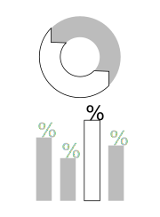
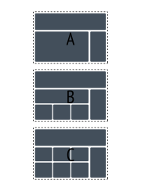
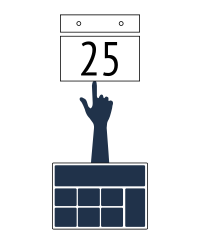

A DESIGN PORTFOLIO
A DESIGN PORTFOLIO
Defining the objective is a fundamental step for any project, but understanding the needs and interpretive ability of the users help solidify the idea. At times, the idea itself requires refinement, calling upon qualitative research and engaging material for both the audience and collaborators. The question is, can there be a story to tell? My techniques revolve around images, surveys, metaphors and models, extracting as many applicable, behavioral tendencies as possible.
In addition to distinguishing the user profile, it has often been useful to go beyond this research by acquring regional statistical data (i.e. population, age, education, occupation). Geographic information systems (GIS) is a resource I've utilized in urban planning to map data. When relevant, these infographics and user profiles can then be integrated to serve as effective tools for an analysis. Brainstorming begins at this stage.
Inspiration strikes constantly when information is fluid. Sketching profusely, each iteration gets progressively closer to the identity of an idea. The design transforms into a wireframe model, created in Adobe Illustrator or Balsamiq. With these building blocks, it's then time to assess the usability of the model by diagrammatic approach. Can the user get from point A to B to C? As this connection strengthens, as does the project.
It is difficult to imagine the end to any project when there is always the possibility of improvement in design. This may be due to changing trends or the emergence of innovative techniques. However, deadlines also exist. A good stopping, or pausing point, is when all the stakeholders of a project are satisfied and can agree with the overall impact as is. The initial goal is one of intent, outlining guidelines for future development and long term growth.
With a broad background in visual and technical design, I'm interested in UX and UI opportunities. In this tranformative information age, ideas are best conveyed through a clear and concise interface. Engaging human behavior through means of visual and responsive design has always been my agenda.
Though my education is formally in architecture and urban planning, much of that time was invested in the design, organization, presentation and implementation of each project. My decision to explore UX and UI design stems from my own desire to the push the boundaries of creativity without physical restraint.
Throughout my career, I've tuned into the most basic instincts of a user and translated those inclinations into movements utilizing design. Architecture and planning is about the navigation of a space, similar to the effects of UX. Behind the scenes, coordination with consultants and contractors have trained me to become extremely deliberate in graphic representation for clarity in construction, generating an internalized instruction manual. I recognize the need for this type of clarity in web design.
There are always a multitude of strategies that can be pursued, but through an iterative process and creative eye, I've been able to demonstrate innovative design techniques and create effective, visual cues. I find working in teams with continuous input necessary to reach successful solutions.
My multidisciplinary background has become an advantage in this increasingly complex field. Through it all, I have never lost sight of the values of responsive design. I consistently aim for meaningful improvements and am continually learning, eager to practice UX/UI design.
Website crafted by Dora Chan